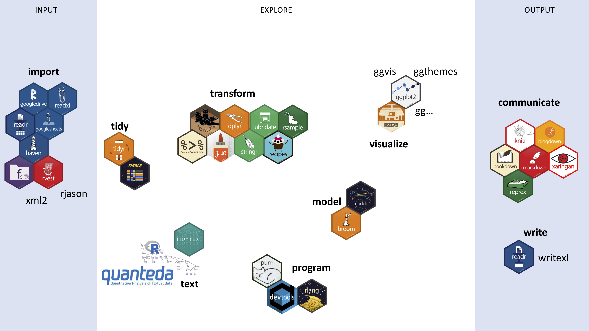
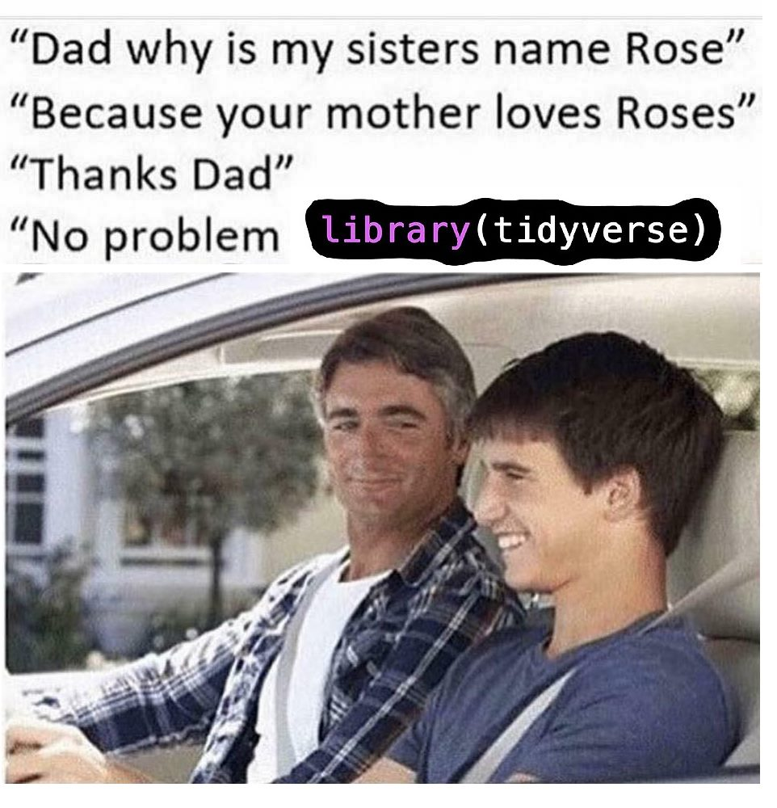
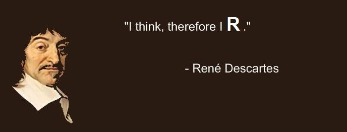
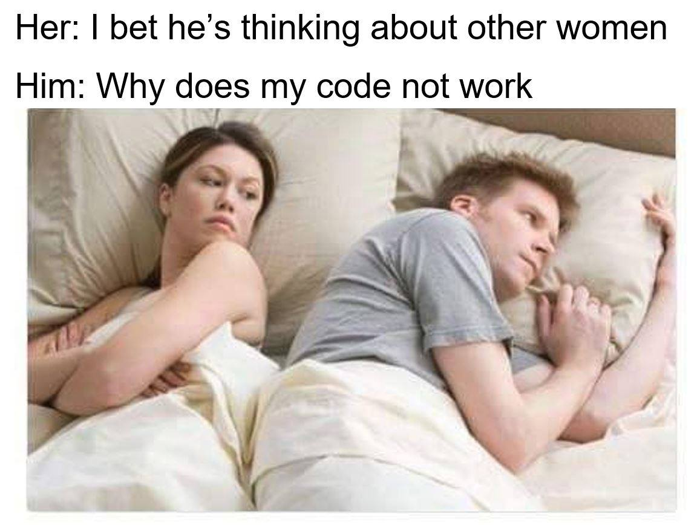
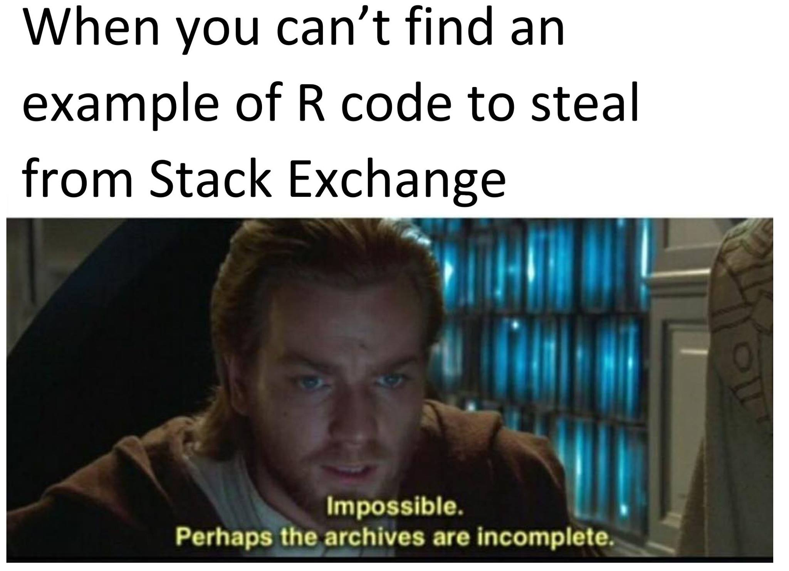
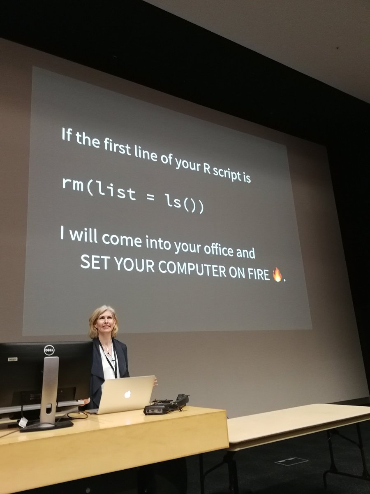
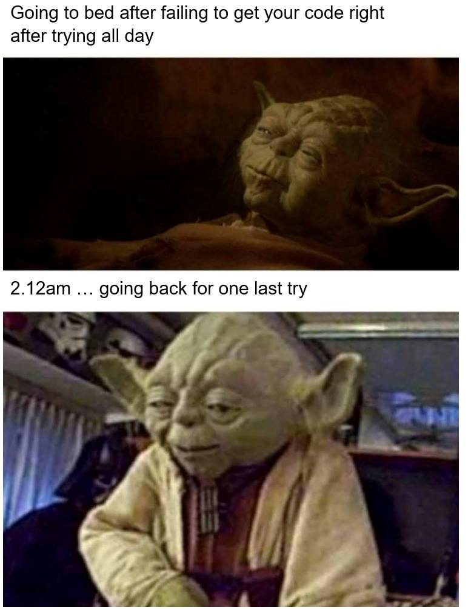
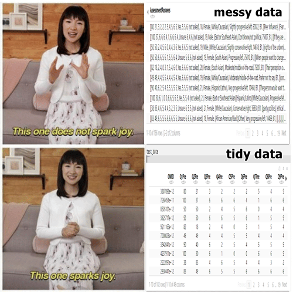

tl; dr
Below you find what we did during the Rbootcamp for Lexical Semanticists. In between this paragraph and the contents, there is a bit of my own #Rstory. Warning, many R-puns.
Intro
Somewhere in the beginning of this semester, I got the request to teach the other people in my lab “the basics of R”, so that they could see what kind of benefits programming languages could give them in their research. I decided that that was a good idea and so, the “Rbootcamp for Lexical Semanticists” was born.
Our group was kind of small, eight people, who found themselves grappling with R and Rstudio for five hours over the course of November and early December 2019. What they had had in mind, I guess, was an intro to one package, or one tool to do everything; instead, I decided to give them one swiss army knife. While it does take a long time to learn R (steep learning curve) and many people have despaired (see cartoon below), I think that for newcomers it is okay to start with the so-called tidyverse.

So my love for the tidyverse can be exemplified in the following meme:

My own experiences
What I mean with that actually has to do with my own backstory: when I first encountered R, during my first MA thesis (Sinology), which analyzed if the writing patterns of famous writers of the Tang and Song dynasties conformed to their claim of participating in the gǔwén yùndòng 古文運動 ‘Classical Prose Movement’ (Van Hoey 2014). With some stylometric methdos, provided through an R package I found that some writers did go back to ancient times for phrases, while others claimed to belong to this movement, yet it did not show in their phrasing (but topically they might still be considered part of the movement). So for me, R was a way to nuance previous research and add a quantitative component to a largely qualitatively researched subject.
After that thesis, I kind of forgot about R, and I have found that coding is really a matter of use it or lose it, but also like riding a bycicle: once you’re well-versed enough in the principles it is easyish to pick up new languages. So I was introduced to Perl in the year after, and learned about regular expressions, which I consider to be one of the top skills that any graduate student (or actually people that use a computer) should learn. You can try and play around with this webite, regexr to see if you get the idea. I promise that it will make your life better.
Flash forward some years into my PhD and there I was, given the option to take a course called “R Language and Data Science”, abbreviated as RLADS. It started from Base R (the R that you install and can just use out of the box), which was kind of hard the learn (I remembered), but it slowly introduced us to this thing called the Tidyverse. My curiosity was piqued and I found the R for Data Science book that was available online (here), and it changed the way I did R. Suddenly, most of the obstacles that resulted from the organic development of R over the years had melted away, in favor of standardized fuctions. It also helps that there are lots of cheat sheets to help you remember what certain functions do. You can find those here.
Becoming a #wizRd

Okay I am not really a wizRd™, but I do like R a lot, as I have mentioned before on this blog, and even though it is reportedly not the fasted languages, I like that the syntax of the language is pretty clear and straightforward. I also like the versatility of the language, and its union to the interface of Rstudio. It really is a swiss army knife, and I am even writing this blog using Rstudio, just to give an example. It has impacted the way I think about data collection (because of already thinking about how I should use programming to later process the data), and also has caused me to state more clearly the hypotheses and research questions. I mean, I already did this before, make no mistake, but it is still a different tale if you’re taking the quantitative route rather than the qualitative route.
So when I got the request to teach R to my labmates I had to think of how to go about it. I knew I would first start with the installation part, and the basic philosophy, and then show them a bit how to get some immediate results. Over the course of the weeks, I did follow some case studies from the three linguists that I most readily connect to the R language: Baayen, Gries and Levshina. You can easily google them and find their R-related stuff, often in conjunction with other people, so these three names metonymically stand for networks of people invested in using corpora as their source material in their linguistic analyses.
So, without further ado, here are the links to the five bootcamp classes we did and the main points covered in each one. For the interested reader, it is best to follow them from the first to the fifth, but if a given topic interests you, feel free to jump to that one. Also, if you find any mistakes (because there might have been, maybe corrected in class but not in the materials), I look forward to hearing from you.
The Rbootcamp for Lexical Semanticists
1-Setup
In the first week we focused on:
- setting up R and Rstudio
- philosophy of R and the tidyverse
- the most used functions
- R, R script, R Markdown
- data transformation with
dplyr - data visualization with
ggplot2
The case study came from a
- movie subtitle corpus
2-Strings
In the second week we focused on:
- working with strings of text through
stringr - datapasta
- input and output through
readrandreadxl - path problems with
hereandfs - data transformation with
dplyr
The case study came from a
- subset of Star Trek movies in the subtitle corpus
3-tidytext
In the third week we focused on:
- buidling a regular expression with
glue - making concordances from text tibbles
- processing multiple files by wrapping things in functions and iterating over them with
purrr - making a word cloud
- very short intro to working with dates through
lubridate
Data came from and through
- Project Gutenberg with
gutenbergr - the Academia Sinicia Balanced Corpus ASBC 4.0 which I had converted from .xml to .rds files (ask me about this if you are also interested in not working with xml)
Case studies came from
- Goldberg’s (1995) treatment of the WAY CONSTRUCTION
- the yídù 一度 CONSTRUCTION one of my labmates is working on
4-quanteda
In the fourth week we focused on:
- scraping stuff from websites with
rvest - text analysis with
quanteda - more practice on iteration with
purrrand functionizing
Data came from
- the lyrics by Jay Chou 周杰倫 on mojim.com
- PTT (the Taiwanese reddit)
5- xml
In the fifth week we focused on:
- learning to work with xml-files through
xml2 - segmentation of Chinese
jiebaR - getting a list of Chinese stop words
Data came from the
- British National Corpus (in xml format)
Case studies
- we explored the family of collostructional analyses first propagated by Stefanowitsch & Gries (2003)
General conclusions
I want to thank my labmates for “sticking with the program”, and trying out a little bit what R can do. I don’t really expect them to go full-on hacker mode, but I do hope that I have shown them that some techniques like regular expressions, or getting stuff from a bunch of files can indeed go pretty efficiently.
For me, the most valuable moments were when we started having discussion about the usefulness of the computational approach. Basically, we seemed to agree that things like R and python etc. are mostly tools that help you process data. The visualizations that follow from these are nice, and you should make them to get a better handle on the spread of your data etc., but you still need to do the analysis.
And that is what R is for me too: a tool that helps me realize better research, but that is not a replacement of research. With that idea running in the background, and the foundational skills I hope to have transferred to them, I hope they can truly become #wizRds™.
Salutatio
In this section of parting words, I want to show that while coding can be annoying, there a large community that is struggling with similar problems as you, the young R-padawan is facing. Luckily we have memes to soothe our suffering. Don’t worry if you don’t understand (all of) them, they’re on a pretty nerdy level of humour.




